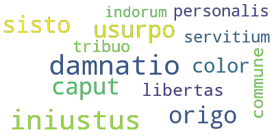
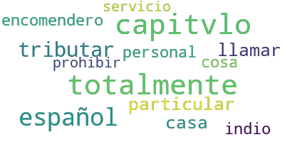
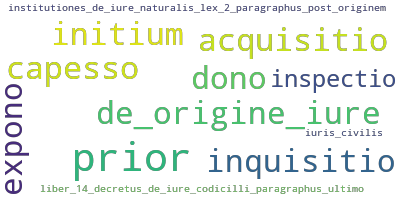
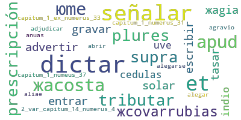
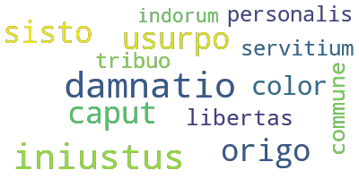
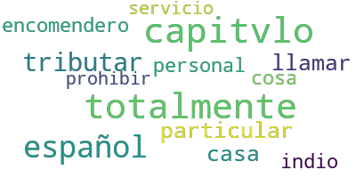
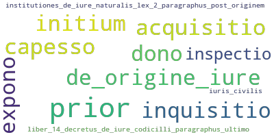
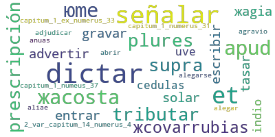

length: 25 words

length: 38 words

length: 67 words
length: 353 words

length: 1055 words
length: 1195 words
length: 1003 words
length: 520 words
length: 837 words

length: 505 words
|
Section 0: [title]  length: 25 words |
Section 0: [title]  length: 38 words |
|
Section 1: [Indians are free]  length: 67 words |
Section 1: [Primero - definición de «servicios personales»] length: 353 words |
|
Section 2: [Primum] length: 1055 words |
Section 2: [origen of serv.pers. not bylaw but from the practical implementation of encomiendas] length: 1195 words |
|
Section 3: [Secundum] length: 1003 words |
Section 3: [Segundo - sobre las Américas y la experiencia directa de SP] length: 520 words |
|
Section 4: [Tertio] length: 837 words |
Section 4: [Tercero - prohibición de los servicios personales aunque se hayan practicado por largo tiempo]  length: 505 words |